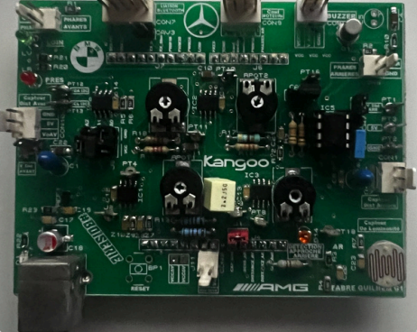
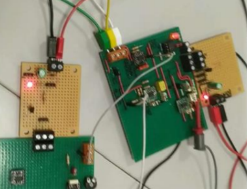

Clément Fabre
Apprenti Ingénieur S3E | Électronique & Embarqué
Étudiant au CESI S3E après un BUT GEII. Spécialiste en analyse de circuits et conception électronique. Actuellement en mission chez Trescal pour le groupe Renault.
Parcours Académique
2025 — 2028
Cycle Ingénieur - S3E
CESI Toulouse — Systèmes Électriques & Électroniques
2023 — 2025
BUT GEII
IUT Paul Sabatier — Génie Électrique & Informatique Industrielle
Missions en Alternance (Trescal)
Ingénieur d'Études (2025-2028)
- • Étude du principe de fonctionnement d'un cycleur / simulateur de batterie.
- • Étude technique sur les Power Electronic Blocks des véhicules électriques.
- • Pilotage de l'installation de bancs d'essai sur site client (Renault Lardy).
Technicien Métrologue (2023-2025)
- • Maîtrise d'appareils de mesure complexes (Analyseur de spectre, oscillos).
- • Analyse et diagnostic de pannes sur appareils électroniques variés.
Ma Stack Technique
Py
C++
STM32
METRO
NUCLEO
Automatisation Modules CSM
Développement d'outils Python pour la vérification automatique de modules d'acquisition industrielle.

Smart Car Bluetooth
Conception matérielle et programmation sur Nucleo pour le pilotage d'un véhicule autonome.

Électrocardiogramme
Filtrage et amplification des signaux cardiaques bio-électriques.
Soft Skills
- • Organisation : Rigueur méthodique pour structurer chaque étape.
- • Précision : Analyse des détails pour garantir la qualité.
- • Communication : Travail collaboratif et partage d'idées.
Mon Plus
• Esprit d'initiative et grande soif d'apprendre.
• Dépassement du cadre théorique par l'exploration technologique.
• Photographie (modèle amateur) développant assurance et confiance.